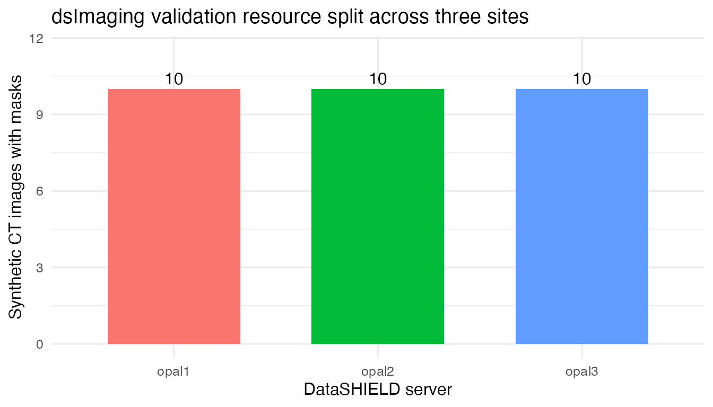
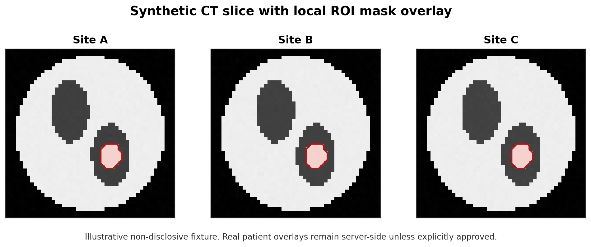
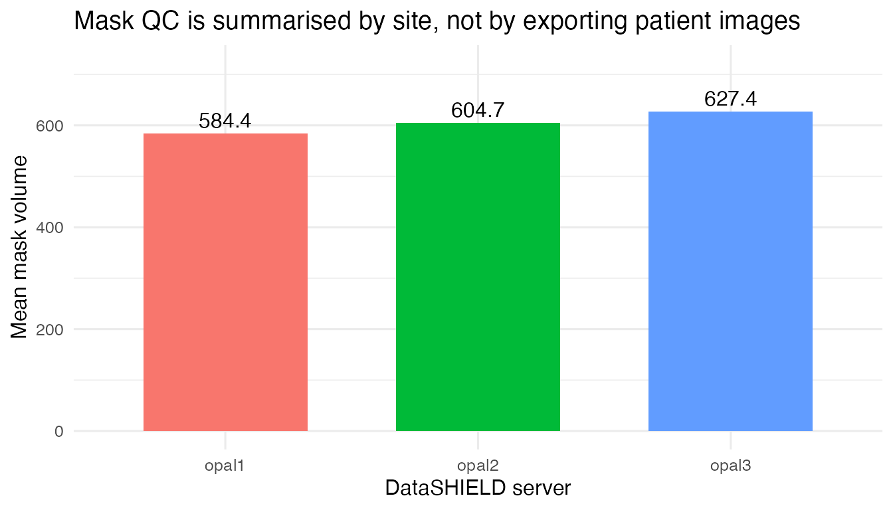
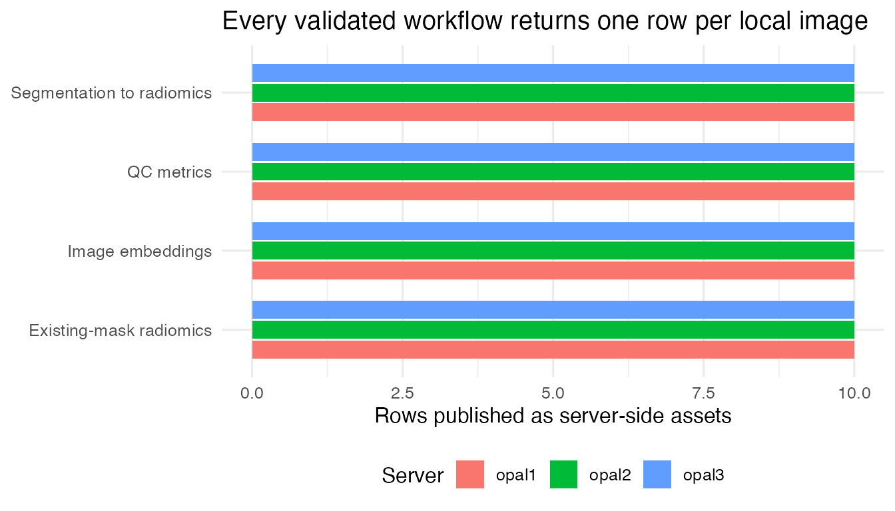

This article documents a compact end-to-end validation of the
dsImaging runner surface. The demo uses one logical
DataSHIELD resource, dsdemo.imaging_demo, resolved independently by
three Opal servers. Each site holds ten synthetic CT-like NIfTI images,
ten matching masks and per-sample metadata. The validation is
deliberately smaller than the LUNG1 cohort article: its purpose is to
exercise the imaging operations provided by dsImaging
without making the vignette depend on a large public image download.
The same resource is used for six server-side workflows: dataset
validation, QC metrics, mask connected components, crop-to-mask spatial
processing, deterministic image embeddings, existing-mask radiomics, and
threshold segmentation followed by radiomics. The jobs are submitted
from R through dsImagingClient; execution and publication
are handled by dsHPC inside the Rock workers.
The evidence bundled with this vignette records
overall_pass = TRUE: dataset validation passed on all three
servers and all six workflow families completed with the expected ten
local samples per site.
The three synthetic collections are published with
dsimaging-admin into the same S3/MinIO layout as the LUNG1
study, and each Opal resolves the shared dsdemo.imaging_demo resource to
its own local dataset — imaging_demo_a,
imaging_demo_b and imaging_demo_c. The analyst
therefore works with a single resource handle while every site keeps its
own images, masks and metadata. The steps below show what the researcher
runs once that configuration is in place.
Running This Validation
1. Connect to the DataSHIELD nodes. Open one session across the three Opal servers that register the validation resource.
library(DSI)
library(DSOpal)
library(dsImagingClient)
library(dsBaseClient)
builder <- DSI::newDSLoginBuilder()
builder$append(server = "opal1", url = "https://opal-node-1.example.org",
user = "researcher", password = "********")
builder$append(server = "opal2", url = "https://opal-node-2.example.org",
user = "researcher", password = "********")
builder$append(server = "opal3", url = "https://opal-node-3.example.org",
user = "researcher", password = "********")
conns <- DSI::datashield.login(builder$build(), assign = FALSE)2. Initialise the resource and resolve each site’s dataset. Bind the shared resource to a handle, confirm the images and masks validate, and read the per-site dataset identifier that each Opal resolves the resource to.
ds.imaging.init(conns, resource = "dsdemo.imaging_demo", symbol = "img")
ds.imaging.validate(conns, "img")
dataset_ids <- vapply(ds.imaging.metadata(conns, "img"),
function(m) m$dataset_id, character(1))3. Run the six imaging workflows. Submit each
workflow family to every site. dsHPC executes the runners
inside the Rock workers and publishes the derived assets back into each
site’s catalogue.
for (srv in names(conns)) {
cx <- conns[srv]
did <- dataset_ids[[srv]]
ds.imaging.qc.metrics(
cx, dataset_id = did, image_asset = "images", mask_asset = "masks",
output_asset = "demo_qc_metrics", visibility = "global"
)
ds.imaging.mask.operation(
cx, dataset_id = did, operation = "connected_components",
mask_asset = "masks", reference_asset = "images",
min_voxels = 5L, max_components = 1L,
output_asset = "demo_masks_cc", visibility = "global"
)
ds.imaging.spatial.process(
cx, dataset_id = did, image_asset = "images",
operations = "crop_to_mask", mask_asset = "masks",
output_asset = "demo_crop_to_mask", visibility = "global"
)
ds.imaging.embeddings.extract(
cx, dataset_id = did, image_asset = "images",
model = "intensity_histogram", bins = 16L,
output_asset = "demo_embeddings", visibility = "global"
)
ds.imaging.radiomics.process_collection(
cx, dataset_id = did,
segmenter = ds.imaging.segmenter.existing_mask("masks"),
profile = ds.imaging.radiomics.profile.demo_ct_firstorder(),
visibility = "global"
)
ds.imaging.radiomics.segment_and_extract(
cx, dataset_id = did,
segmenter = ds.imaging.segmenter.ct_lung_threshold(
threshold = -320, max_components = 2L, min_voxels = 100L
),
profile = ds.imaging.radiomics.profile.demo_ct_firstorder(),
visibility = "global"
)
}4. Load a published asset and inspect it. Once the jobs finish, load any published asset server-side and summarise it with ordinary DataSHIELD functions.
for (srv in names(conns)) {
ds.imaging.load_asset(conns[srv], dataset_ids[[srv]], "demo_qc_metrics",
symbol = "qc", include_metadata = TRUE,
syntactic_names = TRUE)
}
ds.dim("qc", datasources = conns)
ds.mean("qc$mask_volume", datasources = conns)
DSI::datashield.logout(conns)Recorded Results
The values below come from the committed evidence artifact for the run described above; no live servers are contacted when the article renders.
Site Layout
site_counts <- data.frame(
server = site_names,
dataset = unlist(evidence$datasets, use.names = FALSE),
samples = as.integer(unlist(evidence$samples_per_site, use.names = FALSE)),
images = as.integer(unlist(evidence$samples_per_site, use.names = FALSE)),
masks = as.integer(unlist(evidence$samples_per_site, use.names = FALSE))
)
knitr::kable(site_counts)| server | dataset | samples | images | masks |
|---|---|---|---|---|
| opal1 | imaging_demo_a | 10 | 10 | 10 |
| opal2 | imaging_demo_b | 10 | 10 | 10 |
| opal3 | imaging_demo_c | 10 | 10 | 10 |
if (has_ggplot2) {
ggplot2::ggplot(site_counts,
ggplot2::aes(x = server, y = samples, fill = server)) +
ggplot2::geom_col(width = 0.65, show.legend = FALSE) +
ggplot2::geom_text(ggplot2::aes(label = samples), vjust = -0.4) +
ggplot2::labs(
x = "DataSHIELD server",
y = "Synthetic CT images with masks",
title = "dsImaging validation resource split across three sites"
) +
ggplot2::ylim(0, max(site_counts$samples) * 1.15) +
ggplot2::theme_minimal(base_size = 12)
} else {
barplot(site_counts$samples, names.arg = site_counts$server,
ylab = "Samples", xlab = "DataSHIELD server")
}
Mask QC View
The overlay below is generated from the synthetic validation fixture. It is not evidence that patient-level overlays should be returned to the analyst; rather, it shows the kind of local image-mask relation checked inside each site before only approved derived artefacts and aggregate summaries are exposed.
overlay <- "imaging_demo_mask_overlay.png"
if (!file.exists(overlay)) {
overlay <- system.file("extdata", "imaging_demo_mask_overlay.png",
package = "dsImagingClient")
}
knitr::include_graphics(overlay)
The same QC pass publishes table assets server-side. The table below reports site-level aggregate mask summaries computed after loading the QC asset through DataSHIELD.
mask_aggregates <- data.frame(
server = site_names,
mean_mask_voxels = as.numeric(unlist(evidence$qc_aggregates$mask_voxels_mean,
use.names = FALSE)),
mean_mask_volume = as.numeric(unlist(evidence$qc_aggregates$mask_volume_mean,
use.names = FALSE)),
mean_masked_hu = as.numeric(unlist(evidence$qc_aggregates$masked_mean_hu,
use.names = FALSE)),
n_valid = as.integer(unlist(evidence$qc_aggregates$n_valid,
use.names = FALSE))
)
knitr::kable(mask_aggregates, digits = 3)| server | mean_mask_voxels | mean_mask_volume | mean_masked_hu | n_valid |
|---|---|---|---|---|
| opal1 | 197.4 | 584.367 | 130.078 | 10 |
| opal2 | 200.8 | 604.725 | 133.926 | 10 |
| opal3 | 204.8 | 627.360 | 138.114 | 10 |
if (has_ggplot2) {
ggplot2::ggplot(mask_aggregates,
ggplot2::aes(x = server, y = mean_mask_volume,
fill = server)) +
ggplot2::geom_col(width = 0.65, show.legend = FALSE) +
ggplot2::geom_text(ggplot2::aes(label = round(mean_mask_volume, 1)),
vjust = -0.4) +
ggplot2::labs(
x = "DataSHIELD server",
y = "Mean mask volume",
title = "Mask QC is summarised by site, not by exporting patient images"
) +
ggplot2::ylim(0, max(mask_aggregates$mean_mask_volume) * 1.15) +
ggplot2::theme_minimal(base_size = 12)
} else {
barplot(mask_aggregates$mean_mask_volume,
names.arg = mask_aggregates$server,
ylab = "Mean mask volume")
}
Workflow Evidence
workflow_rows <- data.frame(
workflow = c("QC metrics", "Image embeddings",
"Existing-mask radiomics", "Segmentation to radiomics"),
runner_or_route = c("imaging_qc_metrics", "image_embeddings",
"existing masks + PyRadiomics",
"ct_lung_threshold + PyRadiomics"),
opal1 = c(dim_text(evidence$dimensions$qc_metrics$opal1),
dim_text(evidence$dimensions$embeddings$opal1),
dim_text(evidence$dimensions$existing_mask_radiomics$opal1),
dim_text(evidence$dimensions$segmented_radiomics$opal1)),
opal2 = c(dim_text(evidence$dimensions$qc_metrics$opal2),
dim_text(evidence$dimensions$embeddings$opal2),
dim_text(evidence$dimensions$existing_mask_radiomics$opal2),
dim_text(evidence$dimensions$segmented_radiomics$opal2)),
opal3 = c(dim_text(evidence$dimensions$qc_metrics$opal3),
dim_text(evidence$dimensions$embeddings$opal3),
dim_text(evidence$dimensions$existing_mask_radiomics$opal3),
dim_text(evidence$dimensions$segmented_radiomics$opal3)),
stringsAsFactors = FALSE
)
knitr::kable(workflow_rows)| workflow | runner_or_route | opal1 | opal2 | opal3 |
|---|---|---|---|---|
| QC metrics | imaging_qc_metrics | 10 x 23 | 10 x 23 | 10 x 23 |
| Image embeddings | image_embeddings | 10 x 36 | 10 x 36 | 10 x 36 |
| Existing-mask radiomics | existing masks + PyRadiomics | 10 x 29 | 10 x 29 | 10 x 29 |
| Segmentation to radiomics | ct_lung_threshold + PyRadiomics | 10 x 29 | 10 x 29 | 10 x 29 |
status_rows <- do.call(rbind, lapply(names(evidence$workflow_status),
function(workflow) {
do.call(rbind, lapply(site_names, function(site) {
item <- evidence$workflow_status[[workflow]][[site]]
data.frame(
workflow = workflow,
site = site,
pass = isTRUE(item$pass),
completed_or_rows = item$completed %||% item$rows,
failed = item$failed %||% 0,
stringsAsFactors = FALSE
)
}))
}))
knitr::kable(status_rows)| workflow | site | pass | completed_or_rows | failed |
|---|---|---|---|---|
| qc_metrics | opal1 | TRUE | 10 | 0 |
| qc_metrics | opal2 | TRUE | 10 | 0 |
| qc_metrics | opal3 | TRUE | 10 | 0 |
| mask_connected_components | opal1 | TRUE | 10 | 0 |
| mask_connected_components | opal2 | TRUE | 10 | 0 |
| mask_connected_components | opal3 | TRUE | 10 | 0 |
| crop_to_mask | opal1 | TRUE | 10 | 0 |
| crop_to_mask | opal2 | TRUE | 10 | 0 |
| crop_to_mask | opal3 | TRUE | 10 | 0 |
| embeddings | opal1 | TRUE | 10 | 0 |
| embeddings | opal2 | TRUE | 10 | 0 |
| embeddings | opal3 | TRUE | 10 | 0 |
| existing_mask_radiomics | opal1 | TRUE | 10 | 0 |
| existing_mask_radiomics | opal2 | TRUE | 10 | 0 |
| existing_mask_radiomics | opal3 | TRUE | 10 | 0 |
| segmented_radiomics | opal1 | TRUE | 10 | 0 |
| segmented_radiomics | opal2 | TRUE | 10 | 0 |
| segmented_radiomics | opal3 | TRUE | 10 | 0 |
Mask connected-components and crop-to-mask spatial processing publish derived image or mask assets rather than feature tables. Their job summaries record ten completed samples and zero failures at each site.
generic <- evidence$generic_assets
asset_row <- function(site, key, label) {
item <- generic[[site]][[key]]
summaries <- item$provenance$output$summaries
summary <- summaries[[names(summaries)[1]]]
data.frame(
site = site,
workflow = label,
kind = item$kind,
runner = item$provenance$runner,
completed = summary$n_done %||% summary$n_images %||% summary$n_samples,
failed = summary$n_failed %||% 0,
asset_id = item$asset_id,
stringsAsFactors = FALSE
)
}
asset_rows <- do.call(rbind, lapply(site_names, function(site) {
rbind(
asset_row(site, "mask_connected_components", "Mask connected components"),
asset_row(site, "crop_to_mask", "Crop to mask")
)
}))
knitr::kable(asset_rows[, c("site", "workflow", "kind", "runner",
"completed", "failed")])| site | workflow | kind | runner | completed | failed |
|---|---|---|---|---|---|
| opal1 | Mask connected components | mask_root | mask_ops | 10 | 0 |
| opal1 | Crop to mask | image_root | image_spatial | 10 | 0 |
| opal2 | Mask connected components | mask_root | mask_ops | 10 | 0 |
| opal2 | Crop to mask | image_root | image_spatial | 10 | 0 |
| opal3 | Mask connected components | mask_root | mask_ops | 10 | 0 |
| opal3 | Crop to mask | image_root | image_spatial | 10 | 0 |
Radiomics Outputs
The two radiomics passes validate different entry points. The first consumes the masks already present in the collection. The second creates masks inside the DataSHIELD job chain using a deterministic CT threshold runner and then passes those masks to PyRadiomics. Both routes publish ten rows per server.
radiomics_assets <- data.frame(
site = rep(site_names, times = 2),
route = rep(c("Existing masks", "Threshold segmentation"), each = length(site_names)),
asset_id = c(unlist(evidence$assets$existing_mask_radiomics, use.names = FALSE),
unlist(evidence$assets$segmented_radiomics, use.names = FALSE)),
dimensions = c(vapply(evidence$dimensions$existing_mask_radiomics, dim_text, character(1)),
vapply(evidence$dimensions$segmented_radiomics, dim_text, character(1))),
stringsAsFactors = FALSE
)
knitr::kable(radiomics_assets)| site | route | asset_id | dimensions |
|---|---|---|---|
| opal1 | Existing masks | asset_20260526_134318_b3cf4fbc | 10 x 29 |
| opal2 | Existing masks | asset_20260526_134353_4dc60e83 | 10 x 29 |
| opal3 | Existing masks | asset_20260526_134422_ebc6d090 | 10 x 29 |
| opal1 | Threshold segmentation | asset_20260526_134519_241ec0e6 | 10 x 29 |
| opal2 | Threshold segmentation | asset_20260526_134621_d78ece15 | 10 x 29 |
| opal3 | Threshold segmentation | asset_20260526_134718_d8ed42f7 | 10 x 29 |
plot_dims <- data.frame(
workflow = rep(workflow_rows$workflow, each = 3),
server = rep(site_names, times = nrow(workflow_rows)),
rows = as.integer(c(
evidence$dimensions$qc_metrics$opal1[[1]],
evidence$dimensions$qc_metrics$opal2[[1]],
evidence$dimensions$qc_metrics$opal3[[1]],
evidence$dimensions$embeddings$opal1[[1]],
evidence$dimensions$embeddings$opal2[[1]],
evidence$dimensions$embeddings$opal3[[1]],
evidence$dimensions$existing_mask_radiomics$opal1[[1]],
evidence$dimensions$existing_mask_radiomics$opal2[[1]],
evidence$dimensions$existing_mask_radiomics$opal3[[1]],
evidence$dimensions$segmented_radiomics$opal1[[1]],
evidence$dimensions$segmented_radiomics$opal2[[1]],
evidence$dimensions$segmented_radiomics$opal3[[1]]
))
)
if (has_ggplot2) {
ggplot2::ggplot(plot_dims,
ggplot2::aes(x = workflow, y = rows, fill = server)) +
ggplot2::geom_col(position = ggplot2::position_dodge(width = 0.75),
width = 0.68) +
ggplot2::coord_flip() +
ggplot2::labs(
x = NULL,
y = "Rows published as server-side assets",
fill = "Server",
title = "Every validated workflow returns one row per local image"
) +
ggplot2::theme_minimal(base_size = 12) +
ggplot2::theme(legend.position = "bottom")
} else {
barplot(matrix(plot_dims$rows, ncol = 3, byrow = TRUE),
beside = TRUE, names.arg = site_names,
ylab = "Rows", legend.text = workflow_rows$workflow)
}
Interpretation
The validation exercises the parts of dsImaging that
matter for downstream DataSHIELD workflows: a resource-backed image
collection can be initialized from Opal, the worker can materialize
MinIO/S3 assets without analyst-side file access, derived image and mask
assets can be published back into the server catalogue, and tabular
outputs can be loaded into the DataSHIELD session for ordinary aggregate
analysis.